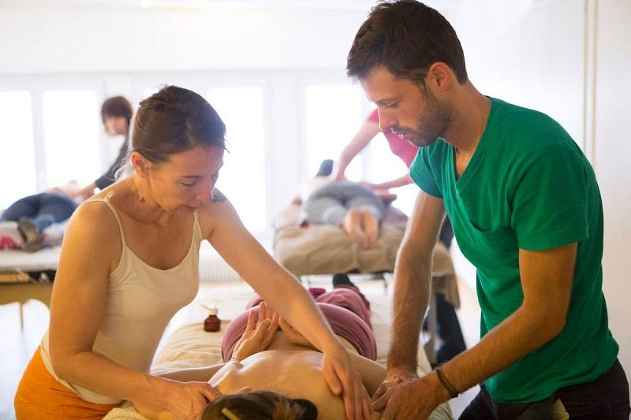

Au sein du Centre de Médecine et de Praticien, le Docteur Ndiaye est attentif à ce
que l’ensemble des intervenants soient à votre service pour vous offrir les meilleurs soins. C’est dans cette optique qu’il a su
s’entourer d’une équipe médicale compétente, appréciant les rapports humains, gage d’écoute envers les patients.
Sokhna
SPA MANAGER
Marion gère toute son activité
incluant le planning des consultations,
des ordonnance cosmétiques et des
séances. Dès la première
prise de contact, elle sera à votre
écoute pour répondre à vos attentes.
Marême
INFIRMIÈRE-ASSISTANTE
Infirmière diplômée d'état, Lynda épaule
le Docteur Ndiaye dans l’ensemble
de son activité. Elle saura
prendre soin de vous depuis votre arrivée
jusqu’à votre départ, ainsi que dans le suivi
et les soins postmassothérapies.

Les spa praticiens
SÉCURITÉ ET CONFORT DES PATIENTS
Le Docteur Ndiaye est entouré
d’une équipe de spa praticien de
qualité qui apportent sécurité et confort
aux patients pour l’ensemble des actes
pratiqués. Vous les rencontrerez lors de la
consultation prémassothérapie où ils vont in-
formeront sur les modalités de votre
massothérapie.